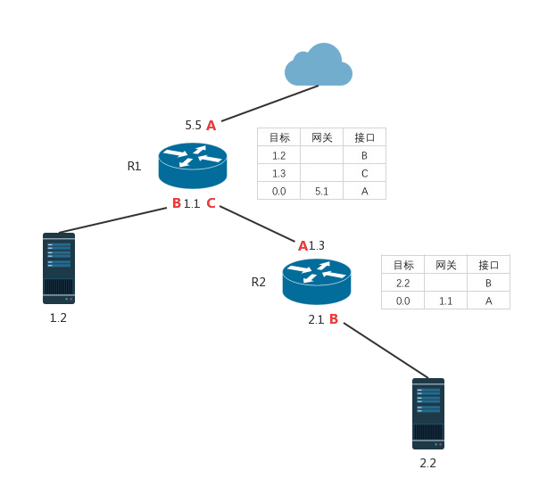

白话BGP协议#
什么是BGP#
引用维基百科对BGP的描述:
边界网关协议（英文：Border Gateway Protocol, BGP）是互联网上一个核心的去中心化自治路由协议。 它通过维护IP路由表或’前缀’表来实现自治系统（AS）之间的可达性，属于矢量路由协议。
BGP是一种通信协议、一组规范、一种解决方案，通俗的说，它用来在多个路由器之间共享彼此的路由表信息，代替了人工维护各个路由器上的路由表，这在大的网络拓扑结构中是很有用的。
为什么用BGP#
我们通过一个例子来看看BGP到底解决了什么问题。

图中有两个路由器R1和R2，为了方便讨论，我将每个IP写成了1.1、2.2的形式，你也可以把它想象成1.1.1.1和2.2.2.2的形式，其中5.5是一个公网IP，其它均是公司内部规划的私有IP，红色的字母代表路由器上的接口，每个路由器旁边有一张表，表示了它们当前的路由信息，并且这几条路由信息是它们默认生成的。
当主机2.2访问主机1.2时，报文先到达R2，这时由于R2的路由表中没有1.2的路由信息，所以报文会被转发到默认网关1.1，然后数据包从R2的A接口发出并到达R1，由于R1中有1.2的路由，所以报文可以到过1.2主机。
当主机1.2访问主机2.2时，由于R1中没有2.2的路由，报文会被送到默认网关5.1，也就是Internet网，结果可想而知，数据包最终会因为TTL耗尽而被丢弃。
要解决1.2不能访问2.2的问题，我们需要在R1上加一条路由，如下：
| 目标 | 网关 | 接口 |
|---|---|---|
| 2.2 | C |
这样当报文到了R1以后，就会被R1从C接口发送到R2，R2再将报文转发给2.2。
但是在网络拓扑非常复杂的情况下，会有很多的路由器以及成千上万的主机（这里不限于同一个公司内部的路由器和主机，更实际的情况是多个公司、多个网络提供商、多个自治网络(AS)组合起来的复杂网络），靠人工为每台路由器配置和维护路由表就会变得不实现。
那能不能自动化完成这些事情呢？答案是可以的，例如上面我们为R1增加的路由信息的操作，实际上可以在所有路由器上各自启动一个服务序程序，让它们将自己的路由表通过TCP连接共享给其它所有路由器，其它路由器收到信息后进行分析，将有用的信息添加到自己的路由表中。这样的服务程序就是BGP，它的目标就是解决大型网络中的可达性信息的共享和管理问题。
实际上，BGP协议被称为最复杂的网络协议之一，实现一个可用的BGP协议需要很多知识，在这里我也只能粗略说一下它的作用和基本原理，让你快速了解到BGP到底是什么，如果需要深入BGP可以查阅相关书籍，如《BGP设计与实现》。
怎样实现BGP#
我接触过一个使用BGP实现的容器网络通信方案Calico，它把Linux节点当做路由器，在多个节点之间使用BGP协议共享路由信息，这个Calico项目是开源的，这篇Calico的文章在这里：Calico网络